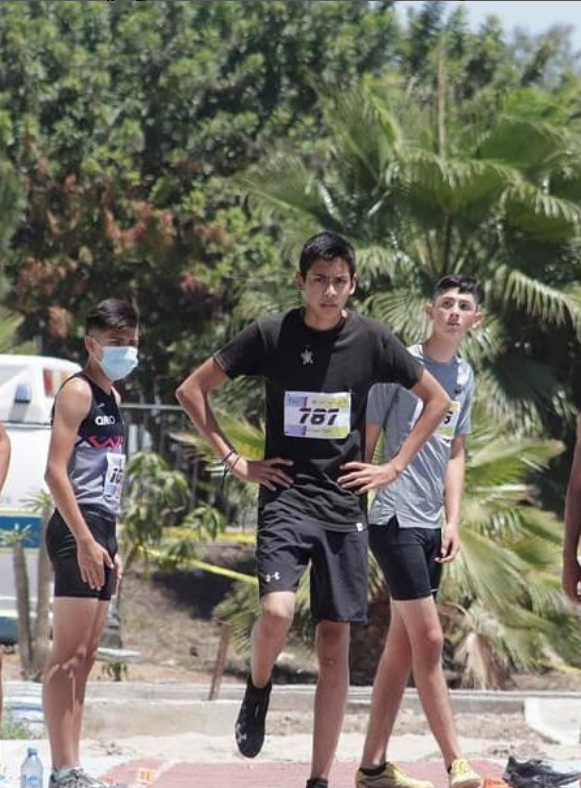

Cantantes/Bandas favoritos: Imagine Dragons, Avicii, Michael Jackson, Colplay, Sam Smith y Lewis Capaldi
Canciones favoritas: Shut up and dance, Nobody, Like i can, Enemy y Counting stars
Peliculas/Series/Genero favoritas: Alita Battle Angel, Stranger Things, Gotham, The 100, Spider-man no way home
Sagas/Trilogias favoritas: El circuito, El bloque y el arca

Este brincador de troncos, salto para demostrar que el esfuerzo es importante si bueno, estos son sus coshias buenas:
1.- Es fitness, eso es dificil
2.- Brinca, salta, corre, brinca y vuelve a saltar, Ynkreible
3.- Futuro arquitecto
Todo muito bien con el, prosigamos para ver más de el y conocerlo
Este saltirin es conocido desde los United States y le pusieron:
1.- Alberto
2.- Pito largo
3.- Mi amor